Az első kör-pokol tornáca
Ide kerültek akik nem voltak megkeresztelve. Itt nem volt kínzás csak végtelen szomorúság és innen, mint a pokol többi köréről sem, innen sem mehettek a mennybe.
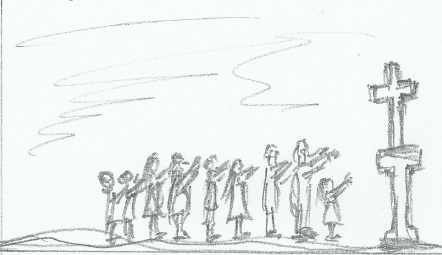
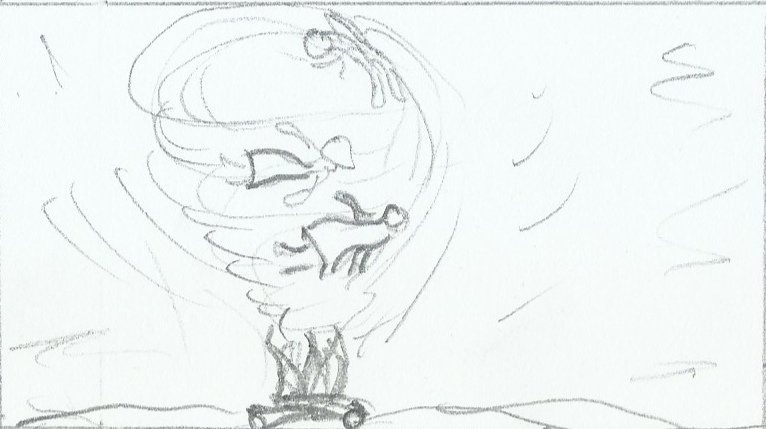
A második kör-szerelem bűnösei
Ebbe a körbe azoknak az embereknek a lelke került, akik életük során a testi és, vagy a szellemi kéjt keresték. A kör bejáratánál Minósz, Kréta királya bíráskodik.
A harmadik kör-A gyomor mértéktelenjei
Ide kerülnek akik túlzásba vitték az evés vagy az ivást. Büntetésképpen a hideg mocskos esőben fekszenek (dagonyáznak) és Cerberus a 3 fejű kutya tépi őket, mivel az életükben is dagonyáztak.
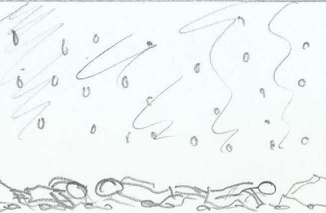
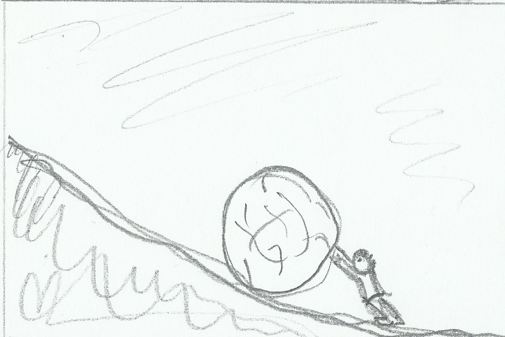
A negyedik kör- kapzsik és pazarlók
Ide a pénz megszállotjai kerülnek, akik büntetésképpen egy hatalmas követ görgetnek egy hegy felfelé, de a kő mindig visszagorul, így előről kell kezdeniük. Mivel az életükben a pénzt hajszolták, most értelmetlen munkát végeznek.
Az ötödik kör- Haragosok
A Styx folyó partja. Ide az agresszív gyűlölködő emberek kerültek. Az emberek itt a végetelnségig verekednek a mocsárban és a víz alatt fuldokolnak. A harag mocsarában éltek, most szó szerint abban vannak.
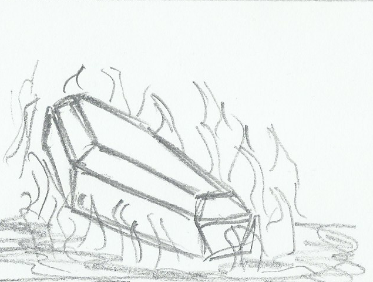
A hatodik kör- Eretnekekés a hitetlenek
Ide kerültek akik tagadták az igaz hitet, és nem hittek a halál utáni életben. Büntetésképpen Dis városában, égő sírokban fekszenek és szenvednek örökké.
A hetedik kör-Erőszakosak (3 részre osztva)
Első gyűrű- Mások elllen
A gyilkosok, zsarnokok illetve azok, akik másoknak anyagi kárt okoztak most az örök végetlenségig forró vérfolyóban állnak, szendvednek
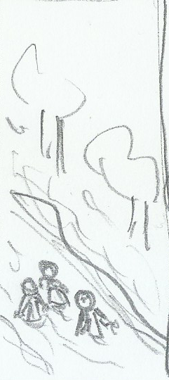
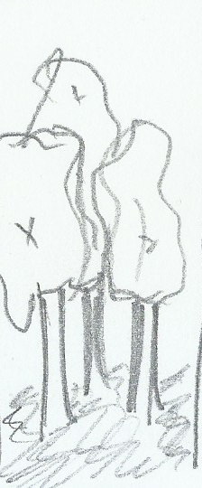
Második gyűrű- önmaguk ellen
Akik öngyilkosok lette, azok ebbe a gyűrűbe kerültek. Itt büntetésppen lelkük fává változott. Ha valami megsértette a fát, például letört egy ága, akkor elkezdtek vérezni és ezáltal szenvedni.
Harmadik gyűrű- Isten ellen
Az Istenkáromlók és fajtalankodók lelkei kerültek ebbe a körbe. Itt a lelkekre tűzeső esik, és égő homokban állnak örökké. Könnyeikből pedig a Phlegethón nevű alvilági folyó ered.
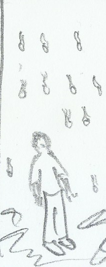
A nyolcadik kör-Csalás
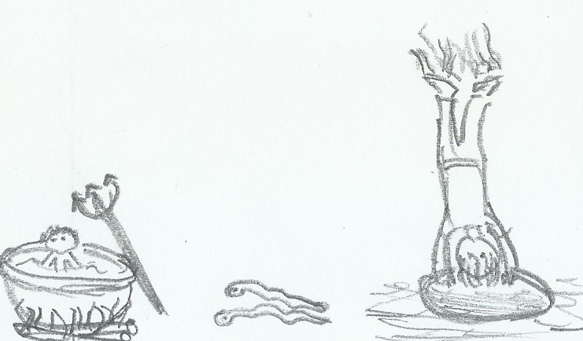
Első bugyor-csábítók
Ebben a bugyorban a csábítók és kerítők lelkei vannak. A lelkeket ördögök ostorozzák, és járnak mesztelenül körbe örökkön örökké.
Második bugyor-Hízelgők
Szennyvízben vannak mert szavaik mocskosak voltak
Harmadik bugyor-Egyházi csalók
Ide azok kerültek, akik visszaéltek az egyházi javakkal, szentségekkel. Itt a lelkek fejjel lefelé egy kőlyukba vannak beszorítva és talpukat tűzzel égetik.
Negyedik bugyor-Jósok
A pokol ezen részére a jósok kerültek. Mivel életükben a jövőt akarták látni, itt hátrafelé tekintve kell menniük.
Ötödik bugyor-Korruptak
A lelkek szurokkal teli üstökben főnek, mindeközben ördögök szurkálják őket vasvillájukkal. Mert ragadós piszkos ügyeik voltak
Hatodik bugyor-Képmutatók
Az elkárhozott lelkek súlyos csuhát viselnek, kívülről vakító aranyozással bevonva, belül pedig súlyos ólomból készültek. Alattuk, pedig Kaiafás feküdt, aki válalhatalan dolgokkal okolta meg Jézus Krisztus halálát.
Hetedik bugyor-Tolvajok
Mivel életükben kígyókhoz hasonlóan alattomosan azok közelébe siklottak akiket ki akartak rabolni mérges kígyók marják őket. A marások következtében elporlad a testük azonban akár a legendás főnix madár mindig újjáélednek és elölről kezdik büntetésüket
Nyolcadik bugyor-Hamis tanácsadók
A bűnösök tűzben állnak kivéve Odüsszeuszt és Diomédészt akik kettős tűzben között állnak mivel együtt harcoltak.
Kilencedik bugyor-Széthúzók
Itt a viszályt szítók és a hitszakadások okozói bűnhődnek felnyitott testtel úgy, hogy szerveik voltak a felszínükön.
Tizedik bugyor-Hamisítók
Rühesek ronda sebeiket tépik, szaggatják körmeikkel, olthatatlan szomjúság kínozza őket
A kilencedik kör-Árulás
Első gyűrű-Család árulói
Az első gyűrűben testvérgyilkosok és a családot elárulók bűnhődnek. Itt nyakig bele vannak fagyva a jégbe az örökkévalóságik.
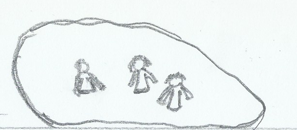
Második gyűrű-Haza árulói
A második gyűrűben a hazaárulók bünhődnek, akik szintén bele vannak fagyva a jégbe, de ők mélyebben.
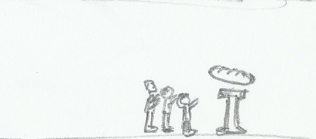
Harmadik gyűrű
Az itt szenvedő lelkek rettenetes szomjuságot éreznek, és bár előttük egy patak folyik, ők nem ihatnak belőle.
Negyedik gyűrű-Jótevők árulói
Teljesen jégbe zárva Itt van maga Dis azaz Lucifer aki a legszebb angyal volt de fellázadt ura ellen s emiatt pokol mélyére lett száműzve ahol a legszörnyűbb ördög lett belőle. Három feje van (ez a három emberfajta a fehér a fekete és a sárga azaz az egész emberiség bűnét testesíti meg). Hatalmas denevérszárnyai megdermesztik megfagyasztják a Cocitus-tó vizét ebbe fagyott bele Lucifer de olyan hatalmas hogy a szőre embervastagságú rést tart teste és a jég között A három fejével az emberiség három legnagyobb bűnösét marcangolja: Caius Cassiust és Brutust Caesar gyilkosait és Júdást aki Mesterét árulta el.